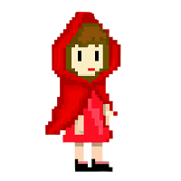
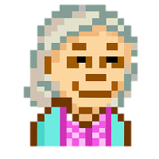
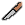

Vítám vás u mojí hry O Červené Karkulce!
Tak co, jste připraveni se vydat na cestu s Červenou Karkulkou? Hodně štěstí!
| Obrázek | Popis |
|---|---|
|  | Červená Karkulka - hlavní hrdinka hry, jejím cílem je dostat se bezpečně k babičce. |
| Vlk - postava, která může představovat nebezpečí pro Červenou Karkulku. | |
|  | Babička - postava, ke které se Červená Karkulka snaží dorazit. |
| Obrázek | Název | Popis |
|---|---|---|
| Domeček | Domeček, ve kterém začíná hra. | |
| Les | Hustý les, kterým se Karkulka musí projít, aby dorazila k babičce. | |
|
Hluboký les | Hluboký les, ve kterém na Karkulku číhá vlk. |
|
Jeskyně | Jeskyně, ve které Karkulka neobjeví nic. |
| Chaloupka | Chaloupka, ve které bydlí babička. |
| Obrázek | Název | Místo výskytu | Popis |
|---|---|---|---|
|  | Nůž | Domeček | Nůž, kterým se můžeme bránit. |
 |
Bábovka | Domeček | Bábovka, kterou musíme donést babičce. |
| Maliny | Les | Ozdravné maliny, které Karkulka potká v lese. | |
| Protéza | Domeček | Babiččina protéza, kterou už moc nepoužívá. |